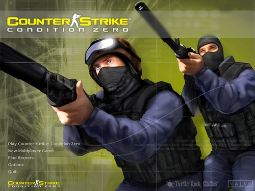

Super Mario 64 (1996)

Ensinou a indústria a mover personagens e controlar câmeras em um mundo totalmente 3D.
Doom (1993)

Popularizou os jogos de tiro em primeira pessoa (FPS) e foi pioneiro na jogabilidade em rede (multiplayer).
Counter-Strike (1999)

Nasceu como modificação e se tornou a fundação dos jogos competitivos táticos modernos.
Anos 2000:
Grand Theft Auto: San Andreas (2004)

Expandiu os limites do mundo aberto, oferecendo liberdade sem precedentes, rádio marcante e forte impacto cultural.
World of Warcraft (2004)

Redefiniu o significado de comunidade e escala nos jogos online, tornando-se o MMORPG definitivo.
Shadow of the Colossus (2005)

rompeu padrões ao eliminar inimigos comuns e cidades, apresentando um mundo vasto e silencioso onde seu único objetivo é derrotar 16 criaturas gigantescas.